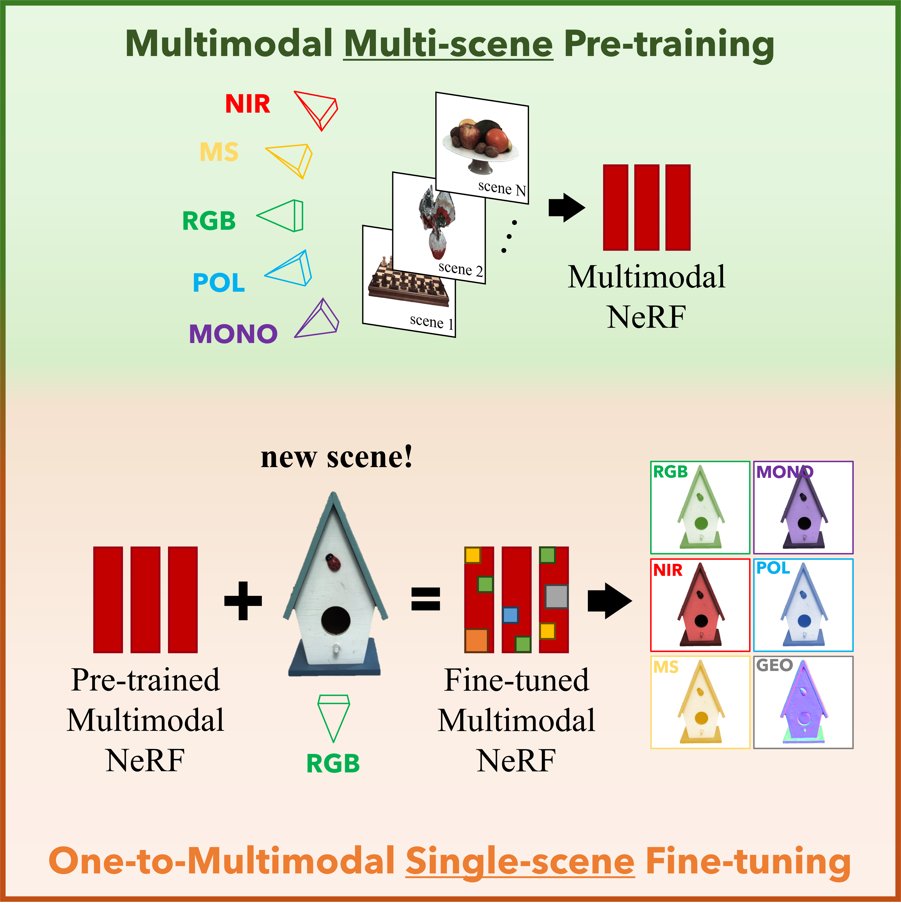
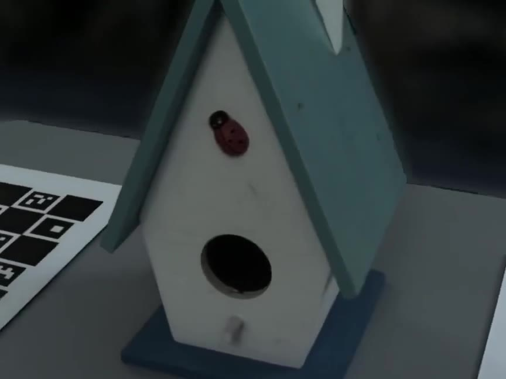
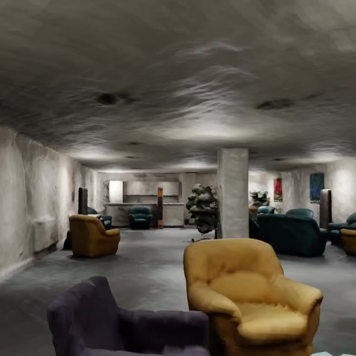
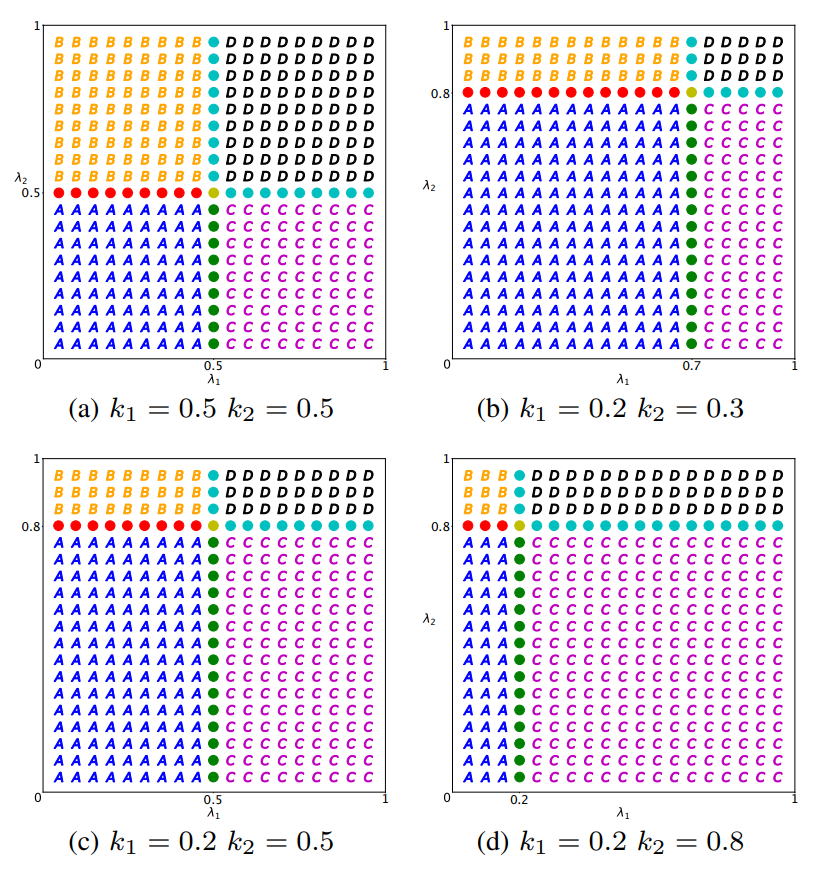

I am a Ph.D. student in Computer Vision at MEDIA Lab advised by Prof. Pietro Zanuttigh at the University of Padova. My research focuses on neural 3D reconstruction and multimodal neural fields, exploiting heterogeneous sensor data (RGB, polarization, spectral, and more) for geometry reconstruction and novel view synthesis.
My Ph.D. is funded by Sony Europe and I collaborate with Gianluca Agresti, Mattia Rossi, and Piergiorgio Sartor on company side.
I received my Bachelor's Degree in Information Engineering in 2020 and my Master's Degree in ICT for Internet and Multimedia Engineering in 2022, both from the University of Padova. In 2022 I spent 6 months at Sony Europe in Stuttgart as a master's thesis student, receiving the Sony Europe SL1 Best Student Work Award. In 2024 I returned to Sony Europe in Stuttgart for a 7-month visiting Ph.D. position. In 2026 I spent 6 months as a visiting Ph.D. student in Prof. Konrad Schindler's Photogrammetry and Remote Sensing group at ETH Zurich.
E-mail / CV / Google Scholar / LinkedIn

Extending novel view synthesis beyond RGB by learning spectral and polarimetric clues that allow rendering multiple imaging modalities from a single input modality.

A multimodal multi-view dataset of 32 scenes captured with five imaging modalities (RGB, monochrome, near-infrared, polarization, multispectral), paired with a modular multimodal NeRF framework that transfers information across modalities to produce higher quality renderings.

A neural implicit modeling method for large indoor environments that combines sparse and dense depth priors with a self-supervised surface normal regularization and learnable exposure compensation, using only images as input.

A game-theoretic approach based on Bayesian games for managing energy allocation in batteryless IoT devices harvesting energy from multiple ambient sources.
{kind=link}